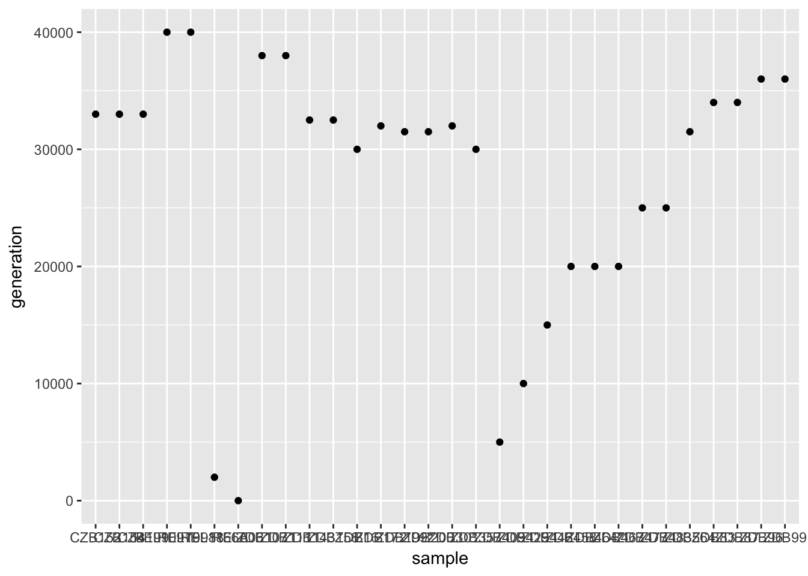
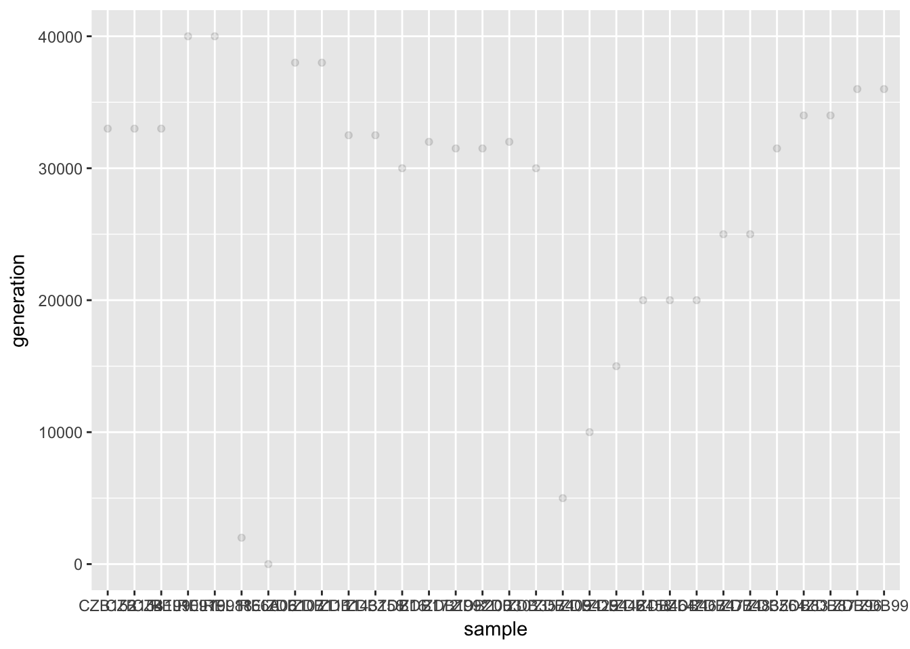
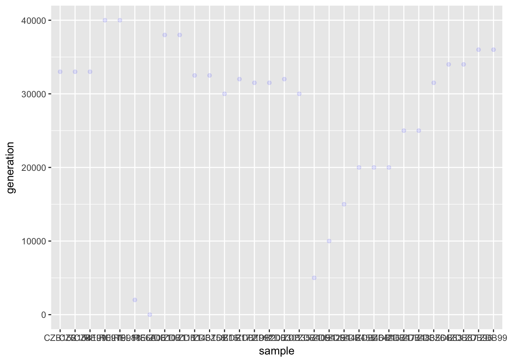
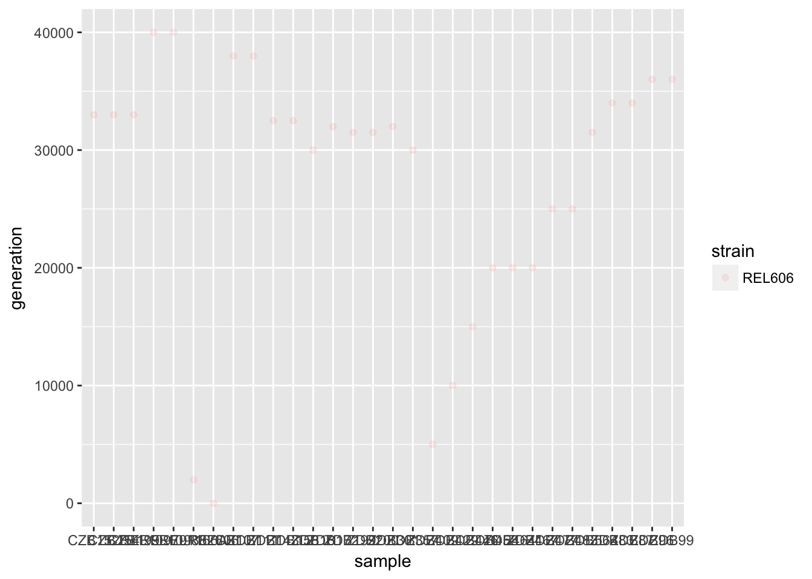
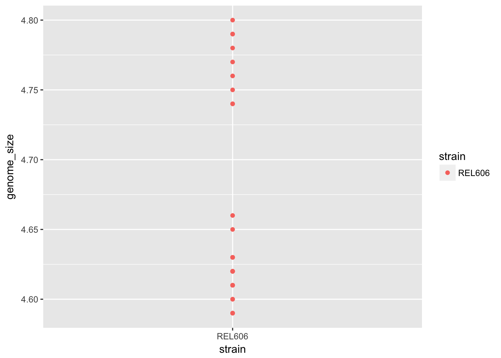
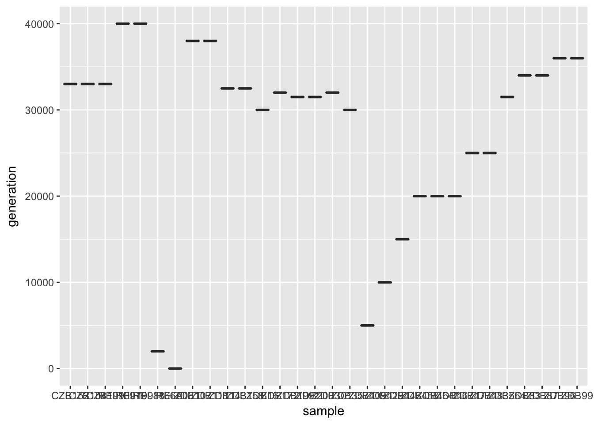
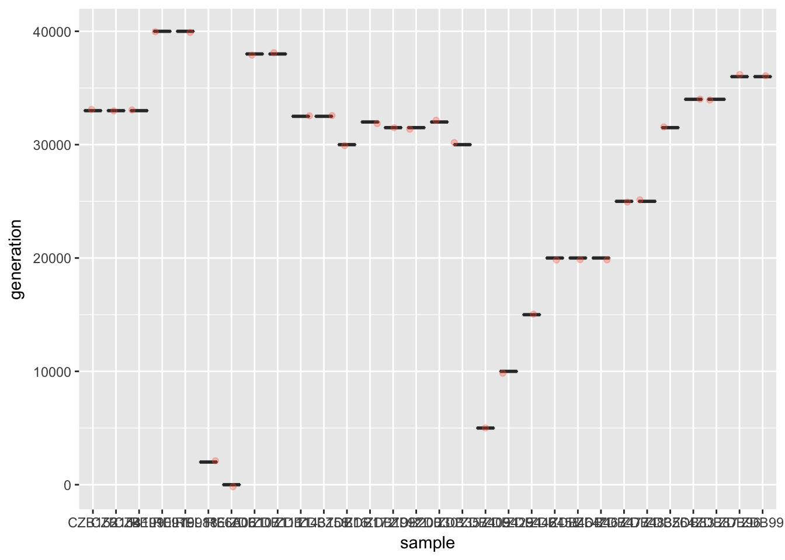
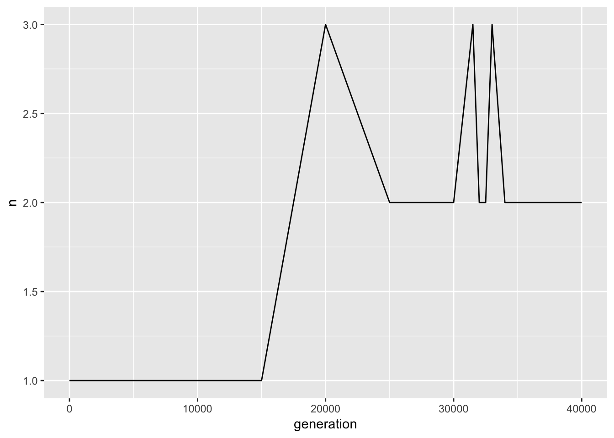

Data visualization with ggplot2
Data Carpentry contributors
Learning Objectives
- Know the role of data, aesthetics, and geoms in ggplot functions
- Choose the correct aesthetics and alter the geom parameters for a scatter plot
- Choose the correct aesthetics and alter the geom parameters for a histogram
- Choose the correct aesthetics and alter the geom parameters for a box plot
- Choose the correct aesthetics and alter the geom parameters for a line plot
- Apply additional aesthetics to a plot
- Apply additional geoms to a plot
- Change plot scales
- Change titles and subtitles
- Change plot themes
- Change plot text fonts, layout, and orientation
- Apply a facet a plot
- Apply additional ggplot2-compatible plotting libraries
- Able to save a ggplot
- List several resources for getting help with ggplot
- List several resources for creating informative scientific plots
- Use the VCF data to create several figures
We start by loading the required packages. ggplot2 is included in the tidyverse package.
library(tidyverse)If not still in the workspace, load the data we saved in the previous lesson.
metadata<- read_csv("data/Ecoli_metadata.csv")#> Parsed with column specification:
#> cols(
#> sample = col_character(),
#> generation = col_integer(),
#> clade = col_character(),
#> strain = col_character(),
#> cit = col_character(),
#> run = col_character(),
#> genome_size = col_double()
#> )Plotting with ggplot2
ggplot2 is a plotting package that makes it simple to create complex plots from data in a data frame. It provides a more programmatic interface for specifying what variables to plot, how they are displayed, and general visual properties. Therefore, we only need minimal changes if the underlying data change or if we decide to change from a bar plot to a scatterplot. This helps in creating publication quality plots with minimal amounts of adjustments and tweaking.
ggplot2 functions like data in the ‘long’ format, i.e., a column for every dimension, and a row for every observation. Well-structured data will save you lots of time when making figures with ggplot2
ggplot graphics are built step by step by adding new elements. Adding layers in this fashion allows for extensive flexibility and customization of plots.
To build a ggplot, we will use the following basic template that can be used for different types of plots:
ggplot(data = , mapping = aes(
- use the
ggplot()function and bind the plot to a specific data frame using thedataargument
ggplot(data =metadata)- define a mapping (using the aesthetic (
aes) function), by selecting the variables to be plotted and specifying how to present them in the graph, e.g. as x/y positions or characteristics such as size, shape, color, etc.
ggplot(data =metadata, aes(x = sample, y = generation))add ‘geoms’ – graphical representations of the data in the plot (points, lines, bars).
ggplot2offers many different geoms; we will use some common ones today, including:geom_point()for scatter plots, dot plots, etc.geom_boxplot()for, well, boxplots!geom_line()for trend lines, time series, etc.
To add a geom to the plot use the + operator. Because we have two continuous variables, let’s use geom_point() first:
ggplot(data =metadata, aes(x = sample, y = generation))+
geom_point()
The + in the ggplot2 package is particularly useful because it allows you to modify existing ggplot objects. This means you can easily set up plot templates and conveniently explore different types of plots, so the above plot can also be generated with code like this:
# Assign plot to a variable
metadata_plot <- ggplot(data =metadata, aes(x = sample, y = generation))
# Draw the plot
metadata_plot +
geom_point()Notes
- Anything you put in the
ggplot()function can be seen by any geom layers that you add (i.e., these are universal plot settings). This includes the x- and y-axis mapping you set up inaes(). - You can also specify mappings for a given geom independently of the mappings defined globally in the
ggplot()function. - The
+sign used to add new layers must be placed at the end of the line containing the previous layer. If, instead, the+sign is added at the beginning of the line containing the new layer,ggplot2will not add the new layer and will return an error message.
# This is the correct syntax for adding layers
metadata_plot +
geom_point()
# This will not add the new layer and will return an error message
metadata_plot
+ geom_point()Challenge (optional)
Scatter plots can be useful exploratory tools for small datasets. For data sets with large numbers of observations, such as the
metadatadata set, overplotting of points can be a limitation of scatter plots. One strategy for handling such settings is to use hexagonal binning of observations. The plot space is tessellated into hexagons. Each hexagon is assigned a color based on the number of observations that fall within its boundaries. To use hexagonal binning withggplot2, first install the R packagehexbinfrom CRAN:install.packages("hexbin") library(hexbin)Then use the
geom_hex()function:surveys_plot + geom_hex()
- What are the relative strengths and weaknesses of a hexagonal bin plot compared to a scatter plot? Examine the above scatter plot and compare it with the hexagonal bin plot that you created.
Building your plots iteratively
Building plots with ggplot2 is typically an iterative process. We start by defining the dataset we’ll use, lay out the axes, and choose a geom:
ggplot(data =metadata, aes(x = sample, y = generation)) +
geom_point()
Then, we start modifying this plot to extract more information from it. For instance, we can add transparency (alpha) to avoid overplotting:
ggplot(data =metadata, aes(x = sample, y = generation)) +
geom_point(alpha = 0.1)
We can also add colors for all the points:
ggplot(data =metadata, aes(x = sample, y = generation)) +
geom_point(alpha = 0.1, color = "blue")
Or to color each strain in the plot differently, you could use a vector as an input to the argument color. ggplot2 will provide a different color corresponding to different values in the vector. Here is an example where we color with strain:
ggplot(data =metadata, aes(x = sample, y = generation)) +
geom_point(alpha = 0.1, aes(color = strain))
Challenge
Use what you just learned to create a scatter plot ofgenome_sizeoverstrainwith the plot types showing in different colors. Is this a good way to show this type of data?Answer
ggplot(data = metadata, aes(x = strain, y = genome_size)) + geom_point(aes(color = strain))
Boxplot
We can use boxplots to visualize the distribution of genome_size within each strain:
ggplot(data =metadata, aes(x = sample, y = generation))+
geom_boxplot()
By adding points to boxplot, we can have a better idea of the number of measurements and of their distribution:
ggplot(data =metadata, aes(x = sample, y = generation))+
geom_boxplot(alpha = 0) +
geom_jitter(alpha = 0.3, color = "tomato")
Notice how the boxplot layer is behind the jitter layer? What do you need to change in the code to put the boxplot in front of the points such that it’s not hidden?
Challenges
Boxplots are useful summaries, but hide the shape of the distribution. For example, if the distribution is bimodal, we would not see it in a boxplot. An alternative to the boxplot is the violin plot, where the shape (of the density of points) is drawn.
- Replace the box plot with a violin plot; see
geom_violin().In many types of data, it is important to consider the scale of the observations. For example, it may be worth changing the scale of the axis to better distribute the observations in the space of the plot. Changing the scale of the axes is done similarly to adding/modifying other components (i.e., by incrementally adding commands). Try making these modifications:
- Represent genome_size on the log10 scale; see
scale_y_log10().So far, we’ve looked at the distribution of genome_size within strain. Try making a new plot to explore the distribution of another variable within each strain.
Create a boxplot for
hindfoot_length. Overlay the boxplot layer on a jitter layer to show actual measurements.Add color to the data points on your boxplot according to the plot from which the sample was taken (
plot_id).Hint: Check the class for
plot_id. Consider changing the class ofplot_idfrom integer to factor. Why does this change how R makes the graph?
Plotting time series data
Let’s calculate number of strains per each generation. First we need to group the data and strain records within each group:
sample_per_generation <- metadata%>%
group_by(strain,generation) %>%
tally()Time series data can be visualized as a line plot with strains on the x axis and generation on the y axis:
ggplot(data =sample_per_generation, aes(x =generation, y = n)) +
geom_line()
Page built on: 📆 2018-07-10 ‒ 🕢 18:28:50
Data Carpentry,
2018. License. Contributing.
Questions? Feedback?
Please file
an issue on GitHub.
On
Twitter: @datacarpentry